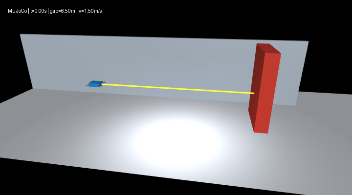
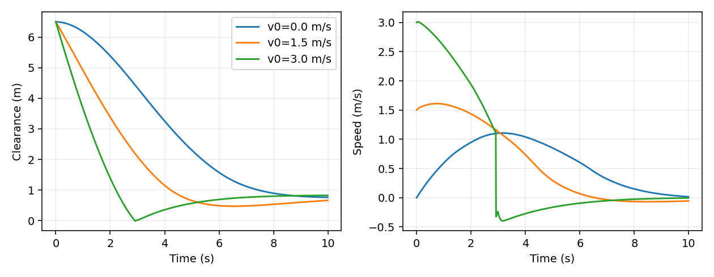

MuJoCo 无人机测距制动与神经控制
场景与模型
无人机沿固定航向接近静态障碍物，模型保留水平、竖直两个平移自由度，以及重力、质量、阻尼和碰撞。机体质量为 0.52 千克，参考高度为 1.2 米，物理步长为 0.01 秒；不包含姿态稳定、旋翼气动或真实飞控接口。

控制原理
reference 读取几何间距与真实速度作为参照；range 使用前向测距与距离差分估速；mlp 使用相同传感输入预测水平加速度。传感器比机身前缘向前安装 0.01 米，推理前补偿该偏移。
闭合速度采用一阶低通滤波：
解析控制按剩余间距给定目标速度，以加速度限幅产生连续制动力。高度由重力补偿与独立 PD 回路保持；制动过程不直接清零速度。
无效测距触发最大反向制动，此策略限于前进接近场景。0.8 米为减速参考值，并非任意初始条件下的停车距离保证。
环境与运行
Python 3.10～3.11，MuJoCo 3.12.0，NumPy 依赖见 requirements.txt。以下命令在 src/air/mujoco_uav_range_neural_braking 中执行：
python -m pip install -r requirements.txt
python main.py --headless --controller mlp
python evaluate.py --controller all --render --output results
python -m pytest -q
主入口和评测默认写入系统临时目录；--output 可显式指定结果目录。初速度 --speed 范围为 0～3 米/秒，超界时给出参数提示。接触步数保存在指标中，完成边界场景的记录后正常退出。
Ubuntu 22.04 / ROS 2 Humble 中执行：
source /opt/ros/humble/setup.bash
ros2 launch ./launch/main.launch.py controller:=mlp model:=/absolute/path/mlp_controller.json
不传 model 时加载模块内的权重文件。旧运行入口 src/ground/mujoco_drone_distance_stop/main.py 转发到相同模块。
数据集与训练
固定随机种子 2026，采集 30 个 12 秒回合，初速度 0～2.5 米/秒，起点与障碍中心间隔 4～9 米，参考高度 0.8～1.8 米。按回合划分训练、验证、测试集，分别为 18、6、6 回合，以及 21600、7200、7200 条记录。
python dataset.py --seed 2026 --episodes 30 --output datasets
python train.py --data datasets --output models --epochs 350 --hidden-size 16
网络输入为补偿固定安装偏移后的表面间距 sensor_range_m 和 closing_speed_m_s，标签为解析测距控制器的 accel_m_s2。生成数据与在线推理都使用 range + 0.01 m 的同一测距定义。高度误差不列入数据集；独立高度控制仍参与仿真。清单记录特征、单位、回合参数与文件 SHA-256，仓库只保留每组 24 行样本和汇总。
模型为 NumPy 两层 MLP，默认含 16 个 ReLU 隐藏单元，学习率 0.003。验证误差用于保留最佳模型，连续 30 轮未改善则提前停止；metrics.json 记录实际训练轮数、隐藏单元数和学习率。默认训练完成 350 轮，测试 MAE 为 0.145426 米/秒²，RMSE 为 0.260402 米/秒²。传感器特征已补偿 0.01 米安装偏移，与闭环推理输入保持一致。
闭环比较
同一次评测使用机身中心 x=-7 米、障碍中心 x=0 米、参考高度 1.2 米，每组运行 10 秒。评测命令将 JSON、PNG 和 GIF 平铺写入模块 results/，文件名分别带有控制器前缀；各控制器指标与 comparison_metrics.json 可由该命令重建。
| 控制器 | 初速度（米/秒） | 最小表面间距（米） | 末速度（米/秒） | 接触步数 |
|---|---|---|---|---|
| 几何参照 | 0 | 0.629500 | 0.000000 | 0 |
| 几何参照 | 1.5 | 0.629413 | 0.000000 | 0 |
| 几何参照 | 3 | 0.629409 | 0.000000 | 0 |
| 测距控制 | 0 | 0.668362 | 0.000000 | 0 |
| 测距控制 | 1.5 | 0.668331 | 0.000000 | 0 |
| 测距控制 | 3 | 0.668360 | 0.000000 | 0 |
| 神经控制 | 0 | 0.759476 | 0.015899 | 0 |
| 神经控制 | 1.5 | 0.470438 | -0.056074 | 0 |
| 神经控制 | 3 | -0.010629 | -0.004231 | 4 |
几何参照与测距控制分别对应约 0.629 米和 0.668 米的间距，两者使用不同观测，不能混作同一组结果。神经控制在默认 1.5 米/秒场景无碰撞；3 米/秒超出训练速度范围，记录 4 个接触步。

检查与文件职责
21 项自动化检查覆盖物理制动、高度恢复、测距失效、回合划分、模型保存加载、命令行参数提示、接触实验退出行为和 MLP 多速度评测。
| 文件 | 职责 |
|---|---|
scene.xml |
刚体、接触和前向测距 |
simulation.py |
物理步进、控制与指标 |
main.py |
运行与轨迹导出 |
evaluate.py |
多速度闭环比较与图形 |
dataset.py |
回合采样与划分 |
mlp.py、train.py |
神经模型、训练与误差计算 |
launch/main.launch.py |
仿真启动、控制器和权重参数 |